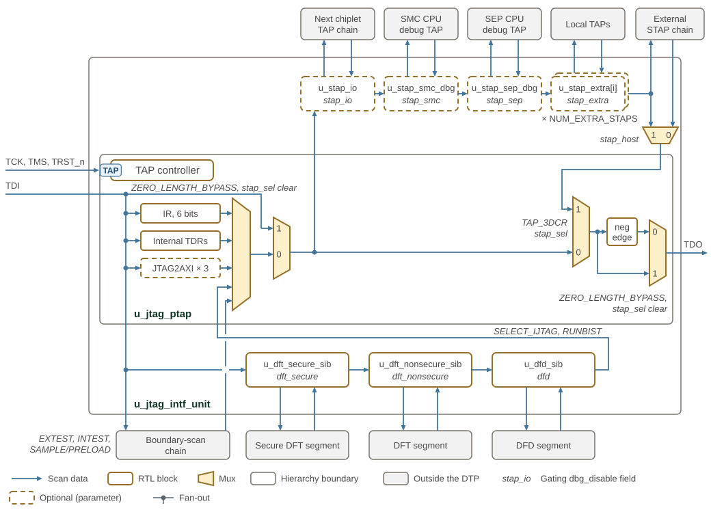

JTAG Operation
This page describes how the DTP integrates its JTAG components at the subsystem level: topology, scan chain ordering, lifecycle feature control. Clock domains and reset overrides are described in Clocks and Resets; IP Reference contains the individual JTAG components.
1. DTP JTAG Topology
The DTP instantiates a single JTAG Interface Unit (JIU) as the primary debug entry point for the chiplet. The JIU connects to:
-
The five external JTAG pins (TCK, TDI, TDO, TMS, TRST_n).
-
The Cross Trigger Network, for the
jtag_clock_stopbit in the DEBUG_CONTROL instruction and for thecla_clock_stopreadback status. -
The SMC AXI fabric via a JTAG2AXI bridge.
-
The SMC and SEP OTP controllers via AXI4-Lite JTAG2AXI bridges.
-
The SMC and SEP CPU debug TAPs via STAPs.
Figure 1 shows the PTAP, secondary scan path, and iJTAG instrument network.

Read Figure 1 along the arrows from TDI to TDO. TDI reaches
every register and external chain at once; the IR and TDR mux returns the
instruction register in Shift-IR and, in Shift-DR, the register the current
instruction selects. Italic labels beside a mux name the instructions or the
select bit that choose its input, and 0 or 1 at a mux input is the select value
that picks it. The PTAP output then enters the STAP chain, which is scanned only
while the TAP_3DCR STAP-select bit is set: the bit gates the chain’s scan strobes
and selects its return onto TDO. Otherwise TDO takes the PTAP output directly. TDO is retimed on the falling edge of TCK except during a
ZERO_LENGTH_BYPASS DR scan with the STAP-select bit clear, when the last mux
takes the TDO mux output ahead of the retimer and TDI reaches TDO
combinationally. While the bit is set, ZERO_LENGTH_BYPASS behaves exactly as
BYPASS: the PTAP bypass register leads the STAP chain and the chain’s return
is retimed. The figure counts the extra STAPs
by the jtag_intf_unit parameter NUM_EXTRA_STAPS, which dtp sets from
JTAG_NUM_EXTRA_STAPS. Each STAP and SIB carries, in italics, the
dbg_disable_i field that closes it. Dashed blocks exist only when their enable
parameter is set, as the list below gives for the STAPs; the JTAG2AXI bridges
follow JTAG_SMC_DBG_ENABLE and JTAG_SEP_DBG_ENABLE. Each STAP adds one SIB bit
to the chain; opening the SIB inserts the STAP’s 3-bit 3DCR, and setting the 3DCR
STAP-select bit splices in its secondary TAP. Each iJTAG SIB inserts its external
segment after its SIB bit while that bit is set.
2. STAP Secondary Scan Path
The PTAP secondary scan path connects the STAPs in this fixed order:
-
PTAP
-
I/O STAP — when
JTAG_STAP_IO_ENABLE=1 -
SMC debug STAP — when
JTAG_SMC_DBG_ENABLE=1 -
SEP debug STAP — when
JTAG_SEP_DBG_ENABLE=1 -
Extra STAP instances
[JTAG_NUM_EXTRA_STAPS-1:0] -
Return to PTAP
When a STAP is disabled by parameter, the DTP bypasses it in the secondary scan chain and drives its host outputs low, apart from TCK, which still follows the PTAP.
3. JTAG2AXI Bridges
The PTAP contains three JTAG2AXI bridges, each selected by its own group of six
instructions (Table 1). The request and response type
parameters of a bridge set its bus type, address width and data width. Its read
and write pipeline-depth parameters set how many transactions it queues, where
0 allows a single outstanding transaction. The table lists the DTP defaults.
Each bridge reports its configuration in its *_JTAG2AXI_CAPS register.
Every output of a bridge’s manager port depends only on the bridge’s
internal state, so no combinational path runs from the port’s inputs to its
outputs. A bridge accepts a response from the cycle after its request
handshake completes.
| Bridge | Instructions | Bus | Address / data width (bits) | Type parameters | Pipeline-depth parameters (default 3) |
|---|---|---|---|---|---|
SMC fabric |
0x27–0x2C ( |
AXI4 |
56 / 64 |
|
|
SMC OTP |
0x1B–0x20 ( |
AXI4-Lite |
32 / 32 |
|
|
SEP OTP |
0x21–0x26 ( |
AXI4-Lite |
32 / 32 |
|
|
See Clock Domains.
See Reset Architecture.
See IC_RESET Overrides.
4. Debug Disable
dbg_disable_i (sep_lifecycle_ctrl_pkg::dbg_disable_t) is a per-path
debug/test disable vector. Each field is active-high (1 = path disabled). The
JTAG interface unit synchronizes the vector into the TCK domain and applies
each field to the named path.
Table 2 maps each debug path to its active-high disable field.
| Path | Disable Field |
|---|---|
I/O STAP host path |
|
SMC debug STAP host path |
|
SEP debug STAP host path |
|
Extra STAP host paths |
|
External STAP return path |
|
Secure external DFT iJTAG path |
|
Non-secure external DFT iJTAG path |
|
DFD iJTAG path |
|
SMC fabric JTAG2AXI path |
|
SMC OTP JTAG2AXI path |
|
SEP OTP JTAG2AXI path |
|
A disabled path remains observable only where required for control and readback. For a JTAG2AXI bridge, disabling means TDR update registers are not latched. The disable gates the idle state: an active AXI transaction continues to completion, and buffered requests are flushed when idle is reached. For a STAP, the host-visible scan access is clamped so the disabled path cannot reach downstream secure logic.
The STAP and iJTAG fields are applied in jtag_intf_unit; the three JTAG2AXI
fields are applied in jtag_ptap.